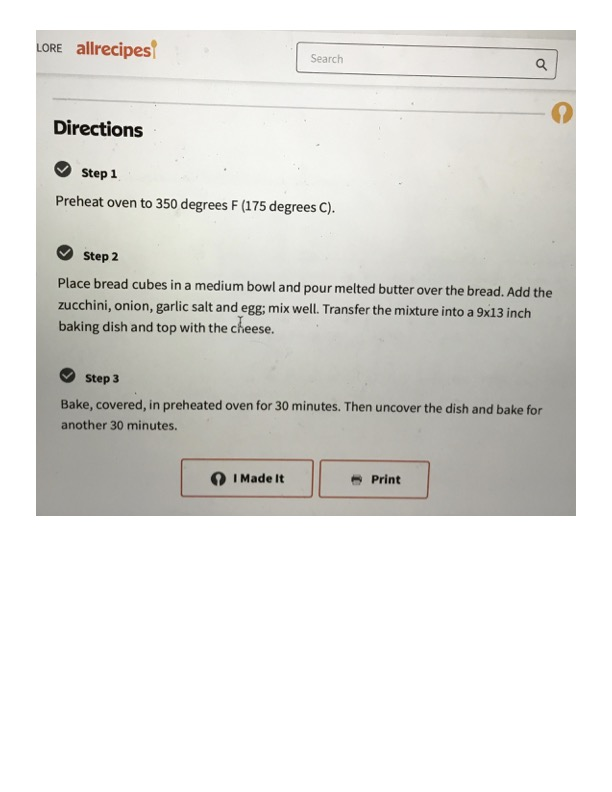

Cheesy Zucchini Casserole (continued)

Original cookbook page 75
This page shows the directions portion of the Cheesy Zucchini Casserole recipe from Allrecipes.com
Cook: 1 hr (30 min covered, 30 min uncovered)
Ingredients
- bread cubes
- melted butter
- zucchini
- onion
- garlic salt
- egg
- cheese
Instructions
- Preheat oven to 350 degrees F (175 degrees C).
- Place bread cubes in a medium bowl and pour melted butter over the bread. Add the zucchini, onion, garlic salt and egg; mix well. Transfer the mixture into a 9x13 inch baking dish and top with the cheese.
- Bake, covered, in preheated oven for 30 minutes. Then uncover the dish and bake for another 30 minutes.
Recipe #75 from collection